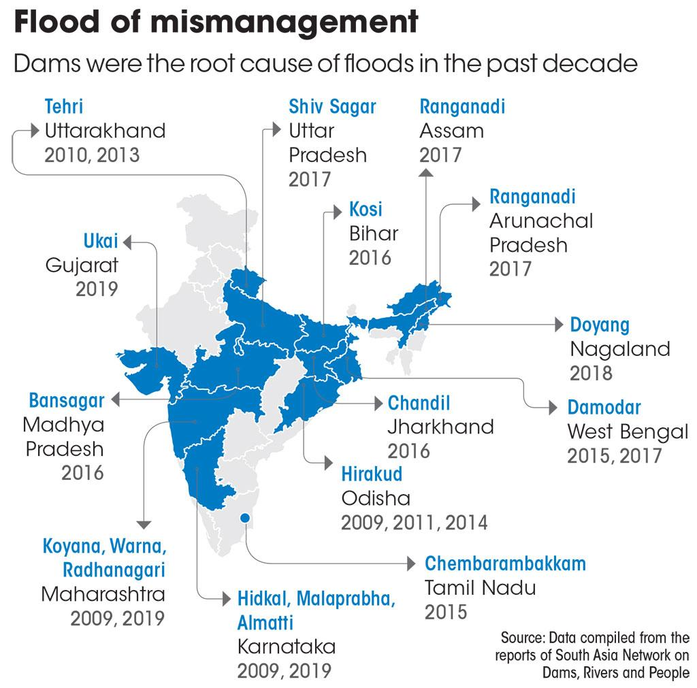
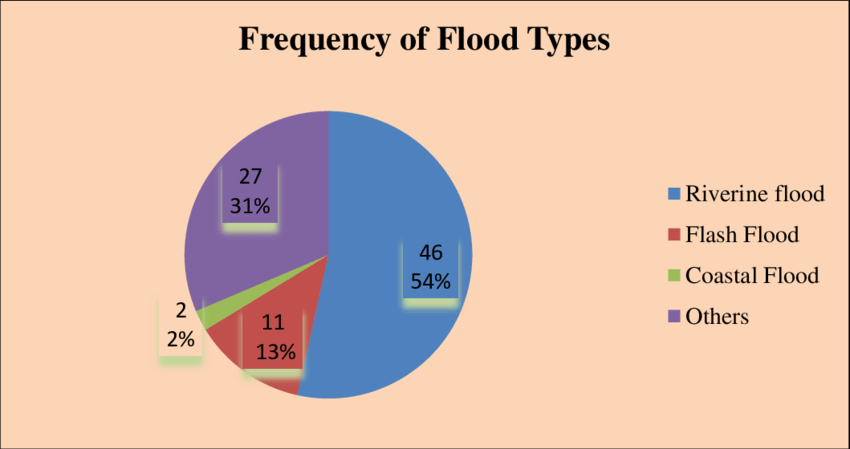
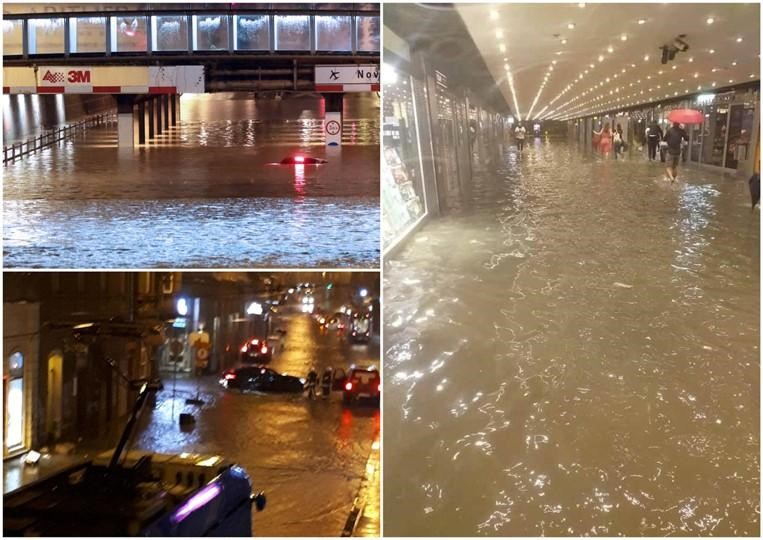
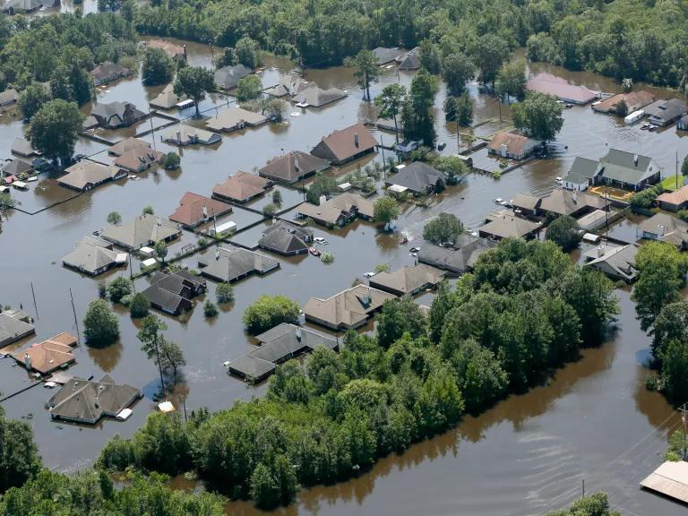

I. Introduction
A. Understanding the gravity of flood-related issues
The gravity of flood-related issues in India cannot be overstated. With a long history of devastating floods, the country's vulnerability to this natural disaster remains a critical concern. Understanding the causes and consequences of floods is crucial in order to effectively address and mitigate this recurring problem.Throughout India's history, floods have wreaked havoc on communities, causing immense damage and loss of lives. The significance of addressing this issue is not only rooted in the past but also in the present and future, as the impacts of floods continue to disrupt lives and impede development.B. Historical context of floods in India
Throughout India's history, floods have wreaked havoc on communities, causing immense damage and loss of lives. The significance of addressing this issue is not only rooted in the past but also in the present and future, as the impacts of floods continue to disrupt lives and impede development.
C. Importance of addressing the causes and consequences of floods
Addressing the causes and consequences of floods is crucial for environmental sustainability and the well-being of communities. Tackling the root causes, such as deforestation and urbanization, is essential to mitigate the frequency and intensity of floods, ensuring the resilience of ecosystems. Beyond environmental concerns, the social and economic impacts demand strategic intervention. Robust disaster preparedness, early warning systems, and resilient infrastructure are vital to minimize the loss of life, property, and livelihoods. Additionally, recognizing the economic repercussions on agriculture underscores the importance of sustainable land-use practices. By addressing these multifaceted challenges, we not only protect human communities but also promote a more harmonious coexistence with the natural environment, fostering long-term resilience and sustainable development.
Floods, a phhenomenon etched in the annals of human history, continue to exert a profound influence on the contemporary world. The gravity of flood-related issues extends beyond the immediate and visible damages, permeating through environmental, social, and economic dimensions. As our planet grapples with the consequences of climate change, the frequency and intensity of floods are on the rise, demanding immediate attention and cohesive strategies to mitigate their far-reaching impacts.
The environmental ramifications of floods are intricate and pervasive. Ecosystems are disrupted, and landscapes are reshaped as rivers overflow, carrying with them sediments and pollutants that contaminate water sources and threaten aquatic life. Critical habitats, such as wetlands, face degradation, further jeopardizing biodiversity. Agricultural communities, already vulnerable, suffer from soil erosion, exacerbating challenges to global food security. The environmental impact of floods is not merely a transient crisis but an enduring challenge that demands sustainable solutions.
The social toll of floods is immeasurable, affecting communities both directly and indirectly. In the immediate aftermath, loss of life and displacement create a sense of despair and urgency for emergency assistance. Yet, the mental health of survivors is often overlooked, as the trauma of witnessing or experiencing a flood can cast a lingering shadow. Vulnerable populations, such as the elderly and children, bear disproportionate burdens, intensifying existing social inequalities. The social fabric of communities is tested, and long-term recovery efforts require a nuanced understanding of the interconnected challenges.
Economically, the aftermath of floods is staggering, with repercussions that extend far beyond the immediate cost of rescue and relief efforts. Infrastructure, including roads, bridges, and buildings, faces severe damage, placing an immense strain on government resources. Agricultural losses, resulting from flooded fields and ruined crops, cripple the livelihoods of farmers and contribute to rising food prices. The economic ripple effect is felt across sectors, as businesses struggle to recover, leading to a surge in unemployment rates and creating a cycle of poverty that is difficult to break. The economic consequences of floods underscore the need for proactive measures and long-term planning.
Climate change emerges as a critical factor in the intensification of floods. Rising global temperatures, melting glaciers, and shifting precipitation patterns contribute to the swelling of rivers and an increased risk of flooding. Vulnerable regions, already grappling with poverty and inadequate infrastructure, bear the brunt of these impacts, amplifying existing inequalities and creating a cycle of vulnerability that is challenging to break. Addressing the gravity of flood-related issues requires acknowledging and confronting the broader challenges posed by climate change.
The urgency of the situation demands comprehensive solutions. Investing in early warning systems and resilient infrastructure is imperative to enhance communities' ability to prepare and respond effectively to floods. Sustainable land management practices, such as afforestation and watershed protection, play a crucial role in reducing soil erosion and mitigating the environmental impact of floods. Moreover, international collaboration is essential, as climate change and its consequences transcend national borders. The need for a collective, global response underscores the interconnectedness of our world in the face of environmental challenges.
II. Causes of Floods in India
Unraveling the Causes of Floods in India
India, a land of diverse landscapes and climatic regions, is no stranger to the recurrent and devastating occurrence of floods. The causes of floods in India are complex, often stemming from a confluence of natural and anthropogenic factors. Understanding the multifaceted nature of these causes is crucial for devising effective strategies to mitigate the impact of floods on communities and the environment.
Geographical Factors
India's diverse topography, characterized by mountains, plains, and coastal areas, plays a significant role in the occurrence of floods. The Himalayan region, home to numerous rivers, experiences intense rainfall during the monsoon season. The combination of steep slopes and heavy precipitation contributes to rapid runoff, leading to riverbank overflow and flash floods. In the plains, vast river basins, such as the Ganges and Brahmaputra, witness a surge in water levels, causing widespread flooding. Coastal regions, especially during cyclones, face storm surges and tidal inundation, exacerbating the flood risk.
Monsoon DynamicsMonsoon Dynamics
The Indian subcontinent is primarily influenced by the Southwest and Northeast monsoons. The Southwest monsoon, which occurs from June to September, brings the majority of India's annual rainfall. While essential for agriculture, this intense monsoon rainfall can lead to excessive runoff, causing rivers to swell beyond their capacity. The variability in monsoon patterns, influenced by phenomena like El Niño and La Niña, can result in erratic and extreme precipitation, contributing to both flash floods and prolonged inundation.
Monsoon Deluge: Role of excessive rainfall in triggering floods
The monsoon season in India, which typically occurs from June to September, brings copious amounts of rain that often exceed the capacity of rivers and drainage systems. These heavy downpours are a major contributor to floods in the country, especially in areas with poor infrastructure and inadequate flood management systems.
Riverine Flooding: How rivers contribute to the flood problem
India is blessed with numerous rivers, but they can also be a source of flooding during periods of intense rainfall. The combination of heavy rain and the inability of rivers to cope with the surge in water levels leads to overflowing and subsequent flooding. Rivers such as the Brahmaputra, Ganga, and Yamuna are particularly prone to such events, causing widespread devastation.
Human Factors: The role of human activities in exacerbating floods
Human activities have played a significant role in exacerbating the flood problem in India. Deforestation, urbanization without proper planning, and encroachment on floodplains have all contributed to the increased frequency and intensity of floods. Additionally, the improper disposal of waste and the blockage of drainage systems further hinder the ability of water to flow freely, aggravating the flood situation.
Deforestation and Land Use Changes
Anthropogenic activities, particularly deforestation and changes in land use patterns, contribute significantly to the frequency and severity of floods in India. Deforestation reduces the natural capacity of forests to absorb rainwater and acts as a buffer against runoff. Rampant urbanization and conversion of agricultural land into impervious surfaces further disrupt the natural flow of water, leading to increased surface runoff and a higher risk of flooding. Poor land management practices amplify the impact of rainfall events, making regions more susceptible to inundation.
River Management and Dam Operations
India's extensive network of rivers is managed through a system of dams and reservoirs. While these structures are essential for water storage, irrigation, and power generation, their operation can inadvertently contribute to floods. Improper dam management, including sudden releases of water during heavy rainfall, can overwhelm downstream areas. Additionally, sedimentation in reservoirs reduces their storage capacity, limiting their ability to control river flows effectively. The delicate balance between water release and storage is crucial for mitigating flood risks.
Climate Change
The global phenomenon of climate change is a key factor influencing the frequency and intensity of floods in India. Rising temperatures contribute to the melting of Himalayan glaciers, increasing the volume of water flowing into rivers. Changes in precipitation patterns and an increase in extreme weather events, attributed to climate change, further compound flood risks. Sea-level rise, associated with global warming, enhances the vulnerability of coastal regions to storm surges and tidal flooding.
III. Consequences and Impacts of Floods
Loss of Lives and Displacement
Floods in India have resulted in the tragic loss of numerous lives over the years. The immense force of floodwaters can be deadly, sweeping away homes, infrastructure, and unfortunately, people. In addition to the loss of lives, floods often lead to significant displacement, forcing communities to abandon their homes and seek refuge in temporary shelters or with relatives.
Economic Losses and Infrastructure Damage
The economic losses caused by floods in India are staggering. Floodwaters damage crops, infrastructure, and public utilities, disrupting agricultural activities, transportation networks, and power supply. The cost of repairing and rebuilding these damaged structures and systems runs into billions of dollars, putting a tremendous strain on the country's economy.
Environmental Impact
Floods in India have far-reaching environmental consequences. The inundation of land disrupts ecosystems, destroys habitats, and displaces wildlife. Moreover, floodwaters often carry pollutants, pesticides, and other chemicals, contaminating water sources and posing a threat to both humans and the environment. The long-term ecological impacts of flooding are significant and can take years to recover from.
IV. Mitigation and Preparedness Measures
Efforts to mitigate and prepare for floods in India involve a combination of structural and non-structural measures, as well as climate adaptation strategies.
A. Structural Measures
Structural measures involve the construction of physical infrastructure to manage and control floodwaters. This includes building dams, embankments, flood barriers, and canal systems. These structures help regulate water flow, divert excess water, and provide flood protection to vulnerable areas.
Structural measures aim to modify the natural environment to reduce flood risks. These include construction and maintenance of dams, embankments, levees, and reservoirs. These structures are designed to regulate river flow, store excess water, and create floodplains. Additionally, the development of efficient drainage systems and flood control channels helps redirect water away from vulnerable areas.
In the face of escalating natural disasters, the importance of mitigation and preparedness measures, particularly those falling under the category of structural approaches, cannot be overstated. Structural measures encompass a range of physical interventions designed to minimize the impact of disasters, with a particular focus on fortifying infrastructure and enhancing resilience. In the context of floods, which pose a pervasive threat to communities globally, structural measures play a pivotal role.
One fundamental aspect of structural mitigation is the construction of dams and levees. Dams serve as critical reservoirs for storing excess water during periods of heavy rainfall, releasing it gradually to prevent downstream flooding. Levees, on the other hand, act as barriers along riverbanks, confining floodwaters and shielding adjacent areas from inundation. While these structures are essential for flood control, their design, maintenance, and strategic placement are paramount to their effectiveness.
Furthermore, urban planning that incorporates flood-resistant infrastructure is a key component of structural mitigation. Elevated buildings, flood walls, and stormwater drainage systems are integral elements of resilient urban design. Implementing building codes that mandate construction practices capable of withstanding flood forces ensures that communities are better equipped to weather the storm. Additionally, the development of green infrastructure, such as permeable surfaces and retention ponds, aids in natural water absorption, reducing the risk of surface runoff and flooding.
Investing in the enhancement of transportation infrastructure is another crucial facet of structural measures. Elevated roadways and bridges are designed to withstand floodwaters, maintaining critical transportation links even during extreme weather events. The strategic relocation of vulnerable infrastructure away from flood-prone areas also contributes to long-term resilience.
However, it is essential to recognize that while structural measures offer tangible benefits, they are not a panacea. The potential drawbacks include high initial costs, environmental impacts, and the risk of failure under extreme conditions. Moreover, over-reliance on structural interventions may inadvertently create a false sense of security, diminishing the importance of non-structural measures such as early warning systems, community preparedness, and sustainable land use planning.
In conclusion, structural measures are indispensable components of a comprehensive strategy for mitigating the impact of floods. By fortifying infrastructure, incorporating resilient urban planning, and investing in transportation resilience, communities can significantly enhance their ability to withstand and recover from flooding events. However, a balanced and integrated approach that combines structural and non-structural measures is essential to building a resilient society capable of navigating the challenges posed by nature's unpredictable forces.
B. Non-Structural Measures
Non-structural measures focus on enhancing community preparedness and resilience. These include early warning systems, evacuation plans, and community-based disaster management programs. Educating communities about flood risks, promoting sustainable land-use practices, and implementing flood-resistant construction techniques also play a vital role in reducing vulnerability.
In the realm of disaster management, the significance of mitigation and preparedness measures cannot be overstated, and non-structural approaches play a pivotal role in fostering resilience against natural calamities. Unlike structural measures that involve physical interventions, non-structural strategies encompass a broad spectrum of practices focused on community awareness, early warning systems, and sustainable policies. In the context of floods, which annually disrupt lives and economies worldwide, embracing non-structural measures becomes imperative.
Central to non-structural mitigation is the establishment and dissemination of robust early warning systems. Timely and accurate information empowers communities to evacuate, prepare, and protect themselves in the face of impending floods. Utilizing technology, such as meteorological forecasting and communication networks, enhances the efficiency of these systems, providing a lifeline during critical moments.
Community education and awareness campaigns form another cornerstone of non-structural measures. Informing residents about the risks associated with floods, evacuation procedures, and the importance of emergency preparedness fosters a culture of resilience. Educated communities are better equipped to respond swiftly, reducing the potential loss of life and property.
Land use planning that integrates sustainable practices is a key non-structural strategy. Avoiding construction in flood-prone areas and preserving natural buffers, such as wetlands and mangroves, helps mitigate the impact of floods. Zoning regulations that restrict development in vulnerable regions contribute to long-term resilience, preventing the exacerbation of flood-related risks.
In addition to early warning systems and community education, effective emergency response and recovery plans are critical non-structural measures. Coordinated efforts involving local authorities, NGOs, and the affected communities ensure a swift and efficient response to flood events. Regular drills and simulations prepare communities for the challenges posed by floods, fostering a proactive and adaptive mindset.
While non-structural measures are essential components of comprehensive disaster management, their success relies on strong governance and policy frameworks. Governments must enact and enforce regulations that prioritize disaster resilience, incorporating non-structural strategies into broader development plans. Collaborative efforts at the national and international levels are necessary to share best practices, technology, and expertise, fostering a global community that can collectively confront the challenges posed by floods.
In conclusion, non-structural measures are integral to building resilient communities capable of withstanding the impact of floods. Early warning systems, community education, sustainable land use planning, and effective emergency response plans collectively form a robust framework for disaster preparedness. As we confront the increasing frequency and intensity of floods, embracing non-structural approaches alongside structural interventions is essential for creating a future where communities can thrive despite the unpredictability of nature.
Climate Adaptation Strategies
Given the link between climate change and increased flood risks, adaptation strategies are crucial. These may involve land-use planning, resilient infrastructure development, and nature-based solutions. By restoring wetlands, preserving natural floodplains, and implementing water management techniques, communities can adapt to changing climatic conditions and reduce the impact of floods.
In the face of escalating climate change, societies worldwide are grappling with the urgent need to adapt to the changing environmental conditions. The increasing frequency and intensity of extreme weather events, rising sea levels, and disruptions to ecosystems underscore the critical importance of implementing robust climate adaptation strategies. These strategies aim to enhance resilience, reduce vulnerability, and ensure sustainable development in the face of a rapidly changing climate.
Understanding Climate Adaptation
Climate adaptation involves making adjustments to social, economic, and environmental practices to minimize the negative impacts of climate change and take advantage of potential opportunities. It recognizes that certain changes are already inevitable due to past emissions and current atmospheric concentrations of greenhouse gases. While mitigation efforts focus on reducing emissions to slow down climate change, adaptation is crucial for coping with the changes that are already underway.
Key Climate Adaptation Strategies
Infrastructure Resilience
Upgrading and fortifying critical infrastructure is essential for adapting to climate change. This includes designing buildings to withstand extreme weather events, elevating structures in flood-prone areas, and reinforcing transportation systems. Incorporating climate-resilient features into infrastructure projects ensures longevity and minimizes the risk of damage during extreme weather events.
Ecosystem-based Adaptation
Protecting and restoring ecosystems can provide natural buffers against climate impacts. Wetlands, mangroves, and forests, for example, act as natural barriers against storm surges and flooding. Implementing ecosystem-based adaptation strategies not only enhances resilience but also preserves biodiversity and ecosystem services, such as water purification and pollination.
Climate-Resilient Agriculture
Adapting agricultural practices to changing climate conditions is crucial for food security. This includes developing drought-resistant crops, implementing water-efficient irrigation systems, and promoting sustainable farming practices. Crop diversification and the use of climate-smart technologies help farmers cope with unpredictable weather patterns and ensure a stable food supply.
Community Engagement and Social Innovation
Engaging communities in the adaptation process is vital for success. Local knowledge and traditional practices can contribute significantly to climate resilience. Promoting social innovation, such as community-based early warning systems and adaptive governance structures, fosters a sense of ownership and empowerment, enhancing the effectiveness of adaptation efforts.
Water Management and Conservation
Sustainable water management is critical for adapting to changing precipitation patterns and increasing water scarcity. This involves the development of water storage and distribution systems, rainwater harvesting, and the implementation of water-efficient technologies. Prioritizing water conservation and efficiency helps ensure a stable water supply for agriculture, industry, and households.
Insurance and Financial Mechanisms
Developing innovative financial mechanisms, such as climate risk insurance and microfinance initiatives, can help communities and businesses recover from climate-related losses. These mechanisms provide a safety net for vulnerable populations and encourage the adoption of climate-resilient practices.
Education and Capacity Building
Enhancing public awareness and knowledge about climate change and adaptation is essential for building a resilient society. Education and capacity-building programs empower individuals and communities to make informed decisions, adapt to changing conditions, and participate in sustainable practices.
Climate adaptation is an imperative response to the challenges posed by a changing climate. By implementing a combination of infrastructure improvements, ecosystem-based approaches, sustainable agriculture practices, community engagement, water management strategies, financial mechanisms, and educational initiatives, societies can enhance their resilience and reduce vulnerability to climate-related risks. The urgency of climate adaptation cannot be overstated, and concerted efforts at local, national, and global levels are essential to secure a sustainable and resilient future for generations to come.
V. Summary and Concluding Remarks
A. Recap of Key Points
In this comprehensive exploration of floods in India, we have traversed the historical context, delved into the causes, examined the far-reaching consequences, and explored mitigation and preparedness measures. From the ancient civilizations grappling with the Indus River to the contemporary challenges posed by climate change, floods have been an enduring facet of India's narrative. The monsoon deluge, riverine flooding, and human-induced factors contribute to the complex dynamics of flooding.
B. Importance of Adopting Comprehensive Approaches
The urgency of addressing the causes and consequences of floods cannot be overstated. Environmental sustainability, community well-being, and economic stability hinge on comprehensive approaches. By mitigating root causes like deforestation and adopting measures such as resilient infrastructure, early warning systems, and sustainable land-use practices, we not only protect lives and livelihoods but also foster a harmonious coexistence with the environment.
C. Encouragement for Continued Research and Innovation
As we conclude, it is imperative to emphasize the importance of continued research and innovation in flood management. Climate change adds a new layer of complexity, requiring adaptive strategies and cutting-edge solutions. Research efforts should focus on understanding evolving climatic patterns, improving early warning systems, and developing sustainable practices. Innovation in infrastructure, community engagement, and climate adaptation strategies is the key to building resilience and mitigating the impacts of floods. In essence, the story of floods in India is one of adaptation, resilience, and the ongoing quest for balance between human activities and the forces of nature. It is a narrative that calls for collective action, sustainable development, and a commitment to safeguarding both the environment and the communities that call India home. As we navigate the torrents, let us embark on a journey of continuous learning, innovation, and collaboration to build a future where the threat of floods is met with preparedness, resilience, and sustainable solutions.